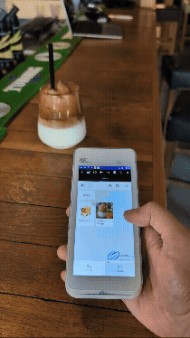
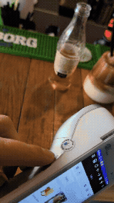

Pay sale orders and customer invoices with your Worldpay POS terminals - anywhere, any time.
Installation: Don't hesitate to contact us for free help with the installation by filling our contact form at support@sns-software.com


This companion module depends on the PoS Terminal Payment Integration Worldpay app (pos_neatworldpay).
Once installed, it enables you to take Worldpay terminal payments and refunds directly from:
Use your existing Worldpay POS terminals configured in Odoo Point of Sale - no separate terminal setup is required for this module.
Upon clicking the 'Download' button on the app, you will receive the link to download the zip file of the module.
Extract the file on your system after the download finishes. You will be able to see a folder named- ‘pos_neatworldpay_sale’.
Copy and paste this folder inside your Odoo Add-Ons path.
Now, open the Odoo App and click on the Settings menu. Scroll to the very bottom of settings. Here, click on Activate the "Developer Mode".
Then, open the Apps menu and click on the top bar ‘Update Apps List’.
In the search bar, remove all the filters and search ‘pos_neatworldpay_sale’.
You will be able to see the module in the search result. Click on ‘Install’ to install it.
Note: This module requires pos_neatworldpay to be installed first. If both are available and Sales is installed, it may auto-install with the main Worldpay POS app.
pos_neatworldpay_sale).pos_neatworldpay) is installed and your terminals are already configured.Contact us: www.sns-software.com
Email: support@sns-software.com